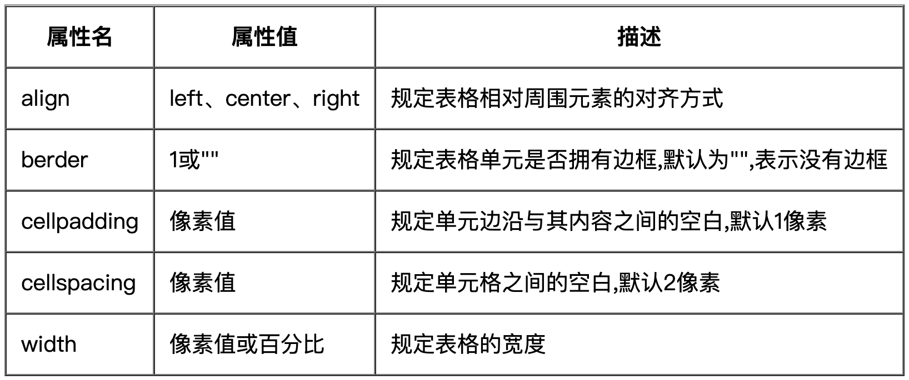

# HTML
# 1、HTML
HTML 是用来描述网页的一种语言。
- HTML 指的是超文本标记语言: HyperText Markup Language
- HTML 不是一种编程语言，而是一种标记语言
- 标记语言是一套标记标签 (markup tag)
- HTML 网页
- HTML 文档包含了 HTML 标签及文本内容
- HTML 文档也叫做web 页面
# 2、HTML 标签
HTML 标记标签通常被称为 HTML 标签 (HTML tag)。
- HTML 标签是由尖括号包围的关键词
- HTML 标签通常是成对出现的
- 标签对中的第一个标签是开始标签，第二个标签是结束标签
- 开始和结束标签也被称为开放标签和闭合标签
# 3、HTML 元素
"HTML 标签" 和 "HTML 元素" 通常都是描述同样的意思。
但是严格来讲, 一个 HTML 元素包含了开始标签与结束标签，如下实例:
HTML 元素 :
<p> 这是一个段落。</p>
# 4、HTML 网页结构
<html>
<head>
<title>页面标题</title>
</head>
<body>
<h1>这是一个标题</h1>
<p>这是一个段落。</p>
<p>这是另外一个段落。</p>
</body>
</html>
# 5、HTML 中文编码
目前在大部分浏览器中，直接输出中文会出现中文乱码的情况，这时候我们就需要在头部将字符声明为 UTF-8 或 GBK。
<html>
<head>
<meta charset="UTF-8">
<title>页面标题</title>
</head>
<body>
<h1>我的第一个标题</h1>
<p>我的第一个段落。</p>
</body>
</html>
# 6、HTML 标题
HTML 标题（Heading）是通过 h1～h6 标签来定义的。
<h1>这是一个标题</h1>
# 7、HTML 段落
HTML 段落是通过标签 p 标签来定义的。
<p>这是一个段落。</p>
# 8、HTML 链接
HTML 链接是通过标签 a 标签来定义的。
# 1、外部链接
target 打开窗口的方式 : 默认值是_self 当前窗口打开页面。
<a href="http://www.qq.com" target="_self">>QQ</a>
target 打开窗口的方式 : _blank 新窗口打开页面。
<a href="http://www.qq.com" target="_blank">>QQ</a>
# 2、内部链接
网站内部页面之间的相互链接
<a href="02-列表.html">列表学习</a>
# 3、空链接
空的链接, 用 # 表示。
<a href="#">地址</a>
# 4、下载链接
下载链接的是文件.exe 或者是 zip 等形式的压缩包形式.
<a href="img.zip">下载地址</a>
# 5、网页元素的链接
<a href="http://www.baidu.com"><img src="img.jpg"/></a>
# 6、锚点链接
点击链接,可以快速定位到页面中的某个位置。
①在链接文本的 href 属性中,设置属性值为 # 名字的形式,如:
<a href="#two">第二集</a>
②找到目标位置,里面添加一个 id 属性等于刚才的名字,如:
<h3 id="two">第二集介绍<h3>
# 9、HTML 图像
HTML 图像是通过标签 img 标签来定义的。
<img loading="lazy" src="./images/home.png" width="260" height="150" />
# 1、HTML 图像-源属性（Src）相对路径和绝对路径
<img src="./images/home.png" alt="some_text">
# 1. 相对路径
以引用文件所在位置为参考基础，而建立出的目录路径。
<img src="images/home.png" />
# 2. 绝对路径
是指目录下的绝对位置，直接到达目标位置，通常是从盘符开始的路径。
<img src="C:\笔记\02-HTML\images.home.png" />
# 2、HTML 图像-Alt 属性
<img src="./images/home.png" alt="Big Boat">
# 3、HTML 图像-设置图像的高度（height）与宽度（width）
height（高度） 与 width（宽度）属性用于设置图像的高度与宽度。
<img src="./images/home.png" alt="Pulpit rock" width="304" height="228">
# 10、HTML 表格
- 表格的第一种写法：
<table border="1">
<tr>
<td>姓名</td>
<td>班级</td>
</tr>
<tr>
<td>安迪</td>
<td>网络</td>
</tr>
</table>
- 表格的第二种写法：
| table | 定义表格 |
|---|---|
| th | 定义表格的表头 |
| tr | 定义表格的行 |
| td | 定义表格单元 |

- 合并单元格：
<table align="center" border="1" cellpadding="50" cellspacing="0">
<tr>
<td></td>
<td colspan="2"></td>
</tr>
<tr>
<td rowspan="2"></td>
<td></td>
<td></td>
</tr>
<tr>
<td></td>
<td></td>
</tr>
</table>
# 11、HTML 列表
HTML 支持有序、无序和定义列表：
# 1、无序列表：
<ul>
<li>andy</li>
<li>iPhone</li>
</ul>
# 2、有序列表：
<ol>
<li>andy</li>
<li>iPhone</li>
</ol>
# 3、定义列表：
<dl>
<dt>andy</dt>
<dd>- black hot drink</dd>
<dt>iPhone</dt>
<dd>- white cold drink</dd>
</dl>
# 12、HTML 块级元素和内联元素
大多数 HTML 元素被定义为块级元素或内联元素。
# 1、HTML 的区块元素：
块级元素在浏览器显示时，通常会以新行来开始（和结束）。
实例 :
<h1>, <p>, <ul>, <table>, <div>
# 2、HTML 的内联元素：
内联元素在显示时通常不会以新行开始, 一行可以显示多个。
实例:
<b>, <td>, <a>, <img>, <span>
# 13、HTML 表单
# 1、文本域（text）：
文本域通过 input 标签的 text 来设定，当用户要在表单中键入字母、数字等内容时，就会用到文本域。
<form>
<input type="text" name="firstname"><br>
<input type="text" name="lastname">
</form>
# 2、密码字段（password）：
密码字段通过 input 标签的 password 来定义。
<form>
<input type="password" name="pwd">
</form>
# 3、单选按钮（radio）：
input 标签的 radio 定义了表单单选框选项
<form>
<input type="radio" name="sex" value="male">Male<br>
<input type="radio" name="sex" value="female">Female<br>
</form>
# 4、复选框（checkbox）：
input 标签的 checkbox 定义了复选框. 用户需要从若干给定的选择中选取一个或若干选项。
<form>
<input type="checkbox" name="vehicle" value="Car">I have a car<br>
<input type="checkbox" name="vehicle" value="Bike">I have a bike<br>
</form>
# 5、提交按钮(submit)：
input 标签的 submit 定义了提交按钮。
当用户单击确认按钮时，表单的内容会被传送到另一个文件。
表单的动作属性定义了目的文件的文件名。
由动作属性定义的这个文件通常会对接收到的输入数据进行相关的处理。
<form name="input" action="html_form_action.php" method="get">
<input type="text" name="user">
<input type="submit" value="Submit">
</form>
# 6、下拉表单(select)：
<form>
籍贯：
<select>
<option>三亚</option>
<option>上海</option>
<option>广州</option>
<option>深圳</option>
<option selected="selected">北京</option>
</select>
</form>
# 7、文本域(textarea)：
<form>
工作复盘：
<textarea cols="50" rows="4">总结今日工作</textarea>
<!-- cols=每行中的字符数，rows=显示的行数 -->
</form>
# 14、HTML 特殊字符
| 特殊字符 | 描述 | 字符的代码 |
|---|---|---|
| 空格符 |   | |
| < | 小于号 | < |
| > | 大于号 | > |
| & | 和号 | & |
| ¥ | 人民币 | ¥ |
| © | 版权 | © |
| ® | 注册商标 | ® |
| ° | 摄氏度 | ° |
| ± | 正负号 | ± |
| × | 乘号 | × |
| ÷ | 除号 | ÷ |
| ² | 平方2 | ² |
| ³ | 平方3 | ³ |
# 15、HTML 框架
Iframe - 设置高度与宽度
height 和 width 属性用来定义iframe标签的高度与宽度。
属性默认以像素为单位, 但是你可以指定其按比例显示 (如："80%")。
<iframe loading="lazy" src="demo_iframe.htm" width="200" height="200">
</iframe>